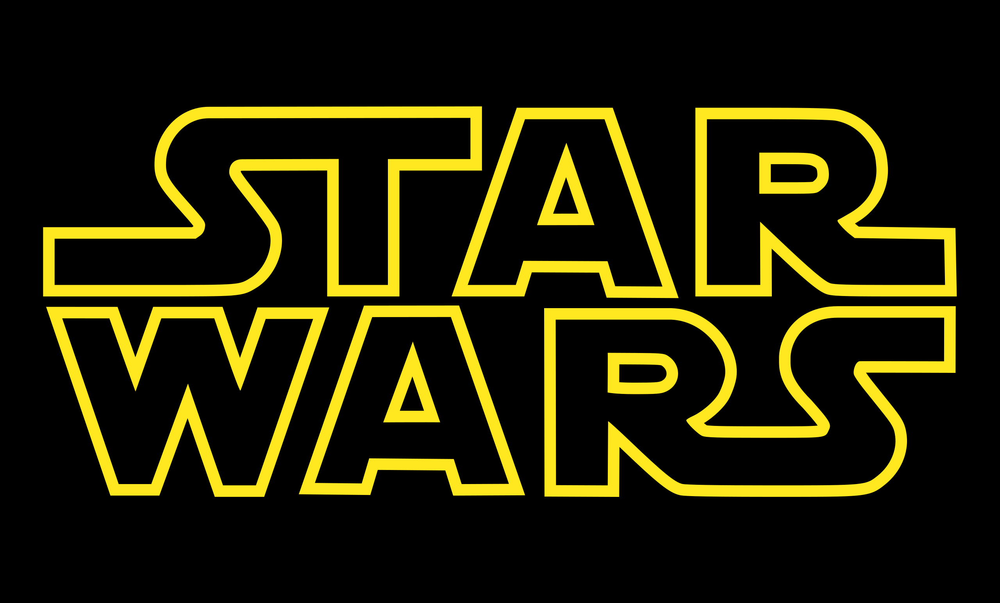
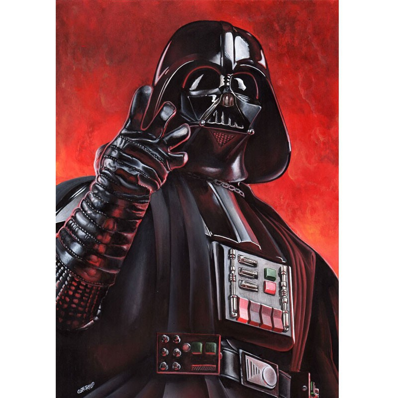

Star Wars 5ª edición es un proyecto de desarrollo de contenido para el planteamiento de campañas basadas en el famoso universo de ciencia ficción, adaptando el material rolero al formato ofrecido por la 5ª edición del famoso juego de rol de mesa Dungeons & Dragons.